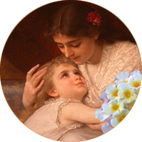
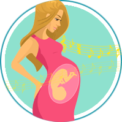

Колыбельные
"Колыбельные" — само это слово настраивает нас на особое, умиротворяющее ощущение уюта и тепла. От него веет самыми светлыми и счастливыми воспоминаниями из детства и какой-то чудесной сказкой. Из поколения в поколение колыбельные песнопения несут в себе чувство спокойствия и защищенности, внутреннего согласия человека с собой и со всем окружающим миром. В чем же их сила и созидательность?
Современные исследования ученых из разных стран мира дают нам четкую картину и неопровержимые доказательства уникальности воздействия колыбельных на сознание и подсознание людей любого возраста и сословия, живущих на разных континентах, имеющих совершенно разный уровень культуры и развития.
Современные ученые-физики утверждают: ритмически построенные фразы, своей мелодикой напоминающие молитву или белый стих, способны однозначно оказывать
благоприятное биоэнергетическое воздействие на организм человека. "В основе восприятия человеческим организмом музыки лежит воздействие биологически активных веществ на определенные структуры мозга, - рассказывает кандидат филологических наук Елена Ермакова. - И, как отмечают педиатры, наиболее мягкое, щадящее воздействие оказывает именно исполнение колыбельных песен. Нанизывание вымышленных образов воздействует, как психотерапевтическая метафора, погружающая мозг в трансовое состояние".
В ходе серьезных научных экспериментов российских ученых выяснилось, что "в большинстве своем, механизмы внушения при помощи убаюкивающих песен имеют установку на работу правого полушария мозга и воздействуют на эмоции, подсознание. Измерение ритмов мозга в момент восприятия текстов колыбельных показало синхронную реакцию биопотенциалов в разных отделах мозга, преобладание работы правого полушария и высокую частоту в диапазоне
дельта-ритма ( глубокое расслабление). Казалось бы, такие незатейливые строки: "Баю-баю-баю-бай, / Поскорее засыпай, / В лес по ягодки пойдем. /Сладких ягод наберем../" а, анализ ритмов мозга показывает, что этот текст - активен, сопровождает физическую деятельность, усиливает умственную активность и внимание.
Участники исследования проанализировали таким образом свыше 100 колыбельных. Основой эксперимента стало положение о том , что каждый звук соответствует определенному физическому колебанию. Когда все звуки сведены воедино, они вызывают определенные изменения в головном мозге слушающего. Таким образом, можно наблюдать, как текст той или иной песни влияет на ребенка. Выяснилось, что в колыбельных наиболее частотны тексты с преобладанием ассоциаций сиреневого, голубого, синего и зеленого цветов, имеющих, как уверяют специалисты,
оздоровительный психотерапевтический эффект."
Аналогичное состояние мозга вызывает
молитва. На недавней всемирной конференции, проходившей в Аризонском университете США под названием «Последние достижения науки о сознании», были опубликованы тезисы
сенсационного открытия российских ученых из Института Бехтерева. Ими было открыто четвертое состояние мозга, не известное науке до этого времени. "До этого науке были известны всего три состояния мозга: бодрствование, быстрый и медленный сон. А теперь еще одно - "медленное" или молитвенное бодрствование. Мы были потрясены тем, что увидели!" - рассказывает заведующий Лабораторией профессор Валерий Слёзин." Во время молитвы православного священника мы видели постепенное урежение ритма биотоков мозга, наконец, остались только
медленные дельта-ритмы (с частотой 2-3 Гц). При этом, электроэнцефалограмма показывала полное выключение коры головного мозга... То есть мы наблюдали
состояние полного отключения мозга при ясном сознании. Такое у взрослого человека бывает лишь во время так называемого "медленного" сна, а во время бодрствования - лишь у младенцев до двух месяцев. Вероятно, слова Христа: "Будьте как младенцы, и спасетесь…" могут быть отнесены к такому состоянию мозга".
"Самый важный вывод, который мы сделали: четвертое состояние мозга столь же необходим человеку, как и все остальные. Отсутствие одного из них нарушает гармоническое развитие человека, приводит к болезни и деградации", - объяснил профессор Слёзин.
Ученые из Геттингемского университета в Германии испытали на группе добровольцев эффективность средств для сна. Проверку проходили снотворные препараты и магнитофонные записи старинных колыбельных песен. К удивлению специалистов,
мелодии колыбельных песен оказались
эффективнее медикаментов. Сон от их воздействия был особенно крепким и глубоким. Ученые также выявили, что если перед хирургической операцией пациент несколько раз прослушает колыбельные мотивы, то дозу обезболивающего можно сократить в два раза.
Ритм колыбельных песен аналогичен с ритмом спокойного сердцебиения. Это около 70 ударов в минуту. Именно поэтому эти песни дарят ощущение умиротворения и релаксации.
Колыбельные песни помогают
быстро снизить кровяное давление и уменьшить сердцебиение, вызванные повседневным стрессом, например, резким звуком или неожиданным движением. Об этом говорят исследования, опубликованные в Американском педиатрическом журнале.
Ряд немецких исследований подтверждают: колыбельные и «пестование» в раннем детском возрасте способствуют более обширному и разнообразному взаимодействию между левым и правым полушариями головного мозга. Повторы звуковых сочетаний, слогов, отдельных слов и их цепочек в одной колыбельной мягко и естественно стимулируют развитие памяти младенца. Получается, что пение колыбельных способствует развитию головного мозга, укрепляя связи между его отдельными участками.
Малыши слышат колыбельные на грани яви и сна, в так называемом, «просоночном» состоянии психики. Песенные образы, их язык и мелодические «формулы» впечатываются в память ребенка, знакомят его с миром. На подсознательном уровне они формируют представление об окружающем, вселенной, и то, что называется
«национальным самосознанием». К тому же, «есть основания предположить, что именно колыбельная, активно внедряясь в подсознание засыпающего ребенка,
формирует фонетический образ родного языка» (М.В. Осорина).
Неоценимую пользу приносят колыбельные как
для общего, так и
для речевого развития ребенка. Дети, которым поют колыбельные песни, раньше начинают произносить звуки, гулить, у них быстрее развивается гортань, а следовательно, и речь. Песни помогают малышу запоминать слова, их значения, порядок слов в предложении. Привыкая к повторяющимся интонациям песни, ребенок начинает делать различие между отдельными словами, что помогает ему лучше и быстрее овладевать речью, осмысливать ее содержание. В колыбельных многократно встречаются словосочетания из существительных и глаголов - как раз те, которые малыш в этом возрасте может наблюдать и осознавать: предметы и их движение. Характерным для колыбельных являются различные повторения, в которых фигурируют звуковые сочетания, слоги, отдельные слова и их цепочки — за счет этого идет обогащение словаря ребенка. Детям 2-3-х летнего возраста тексты колыбельных дают азы грамматического строя речи, помогают образовывать однокоренные слова (например, "кот", "котенька", "коток", "котик", "котя").
Совершенно естественно, что во время прослушивание колыбельных у малыша развивается фонематический слух - способность к анализу и синтезу речевых звуков, то есть слух, обеспечивающий восприятие фонем родного языка. Его недоразвитие грозит в дальнейшем серьезными нарушениями речи, письма и чтения. Долгое и эмоционально окрашенное растягивание гласных и шипящих звуков, присущее самой манере исполнения колыбельных, невольно развивает у ребенка способность их различать, запоминать и правильно произносить.
Колыбельные поддерживают становление иммунной системы ребёнка. Так, в 2008 году турецкие учёные экспериментально доказали, что младенцы, которым пели колыбельные песни, более выносливы и менее подвержены вирусным заболеваниям.
Не удивительно, что такие научные открытия и многофункциональная результативность пения колыбельных , обусловили их практическое применение в перинатальных центрах всех развитых стран мира, где выхаживают недоношенных младенцев и малышей с различными видами тяжелых патологий . Ученые и врачи этих центров особенно рекомендуют петь их детям с перинатальной энцефалопатией (нарушения функции или структуры головного мозга), сопровождающейся синдромом общего угнетения, с нарушением ритма дыхания, с тенденцией к брадикардии (уменьшение частоты сердечных сокращений), с нарушениями моторики кишечника, а также малышам, рожденным раньше срока и с малым весом. Доказано также, что уникальная ритмика колыбельной песни может служить профилактическим средством двигательных и речевых расстройств (тиков, заикания, нарушений координации, моторных стереотипов).
Выходит, что, от того,
какие песни пела
мама (и пела ли вообще), зависит
физическое здоровье ребенка, степень его психологической устойчивости и даже характер малыша. В колыбельных песнях визуализируется личность ребенка и занимаемое им в этом мире место. Младенец при этом чувствует себя, "как Адам в Раю". Обратите внимание: в колыбельных песнях все время настойчиво повторяется имя малыша, которое уже само по-себе вызывает и укрепляет в ребенке определенные личностные качества, присущие именно этому имени. Благодаря такому многократному обращению, вплетенному в ткань песни, ребенок постепенно учится осознавать себя в этом мире. Для полноценного развития малышу важно знать, что он - желанен и любим, его мама — самая лучшая, а родной дом — самый теплый и уютный. Более того, в колыбельных песнях мама выстраивает окружающий мир вокруг ребенка. Она постоянно обращается к природе, животным и птицам, как лучшим друзьям малыша. Очень многие колыбельные несут обращение к Богу, Божией Матери, ангелам-хранителям с просьбой уберечь ребенка от всего плохого, "подать" крепкий сон, здоровье и благополучие.
Таким простым и естественным образом у малыша формируется
базовое доверие к миру. Чем это хорошо? Такие дети уже в раннем детстве проявляют общительность, сообразительность, изобретательность в играх. В дошкольном и подростковом возрасте они демонстрируют черты лидерства, отличаются инициативностью, отзывчивостью, сочувствием, пользуются популярностью среди сверстников. По статистике, эти дети меньше подвержены психическим расстройствам, они более спокойны, уверены в своих силах, а уровень интеллектуального развития у них выше, чем у сверстников, которым не пели колыбельных.

Колыбельные являются
связующим звеном в общении между
родителем и ребёнком, которое сохраняется
на всю жизнь. Многочисленные американские исследования по приемному родительству рекомендую таким родителям и опекунам петь детям колыбельные, чтобы восстановить, возможно утраченное, чувство привязанности к родным людям и общее доверие к окружающему миру.

Сон для грудного ребенка занимает большую часть времени и крайне необходим для его нормального развития. Нейрофизиологи говорят о том, что для того, чтобы «включилось» засыпание, синхронизирующие системы мозга должны созреть, а они развиваются под влиянием внутренних и внешних ритмических стимулов, таких, как укачивание, пение колыбельных, поглаживания и легкие ритмичные постукивания. Если становление механизмов, включающих определенные стадии сна, замедляется или нарушается, то ребеночек начинает укачивать сам себя, раскачиваться из стороны в сторону, тереться головой о подушку и т.д. Таким образом, укачивание и колыбельные оказываются необходимым стимулом для «запуска» естественных биоритмов мозга, учат малыша правильно и во время расслабляться, полноценно отдыхать, то есть учат правильно спать.
Таким образом, на грани сна и яви, у ребенка формируются глубинные стереотипы, пространственная, временная и социальная ориентация, чувство уверенности и защищенности. Многие психологи, социологи и культурологи сейчас сходятся на том, что «стресогенные факторы сегодняшнего дня могут быть вызваны вовсе не «сумасшедшим» темпом жизни и не «информационной революцией", а именно несформированностью некоторых глубинных, базовых процессов. Недостаток этот порожден той противоречивостью и шаткостью установок и представлений, которые дает родителям современная культура в отношении воспитания детей».
Пора наверстывать упущенное... Во всём мире нет слов, какими можно было бы передать материнские чувства, выраженные в прекрасной мелодии колыбельной песни. Она является самой необходимой, сладкой, теплой и родной песней для малыша, потому что ее исполняет любимая и родная мама. Ему совсем не важно, есть ли у матери слух и голос - ребенку важна
интонация и звучание родных голосов. Колыбельная песня – это своего рода таинство, соединяющее маму и малыша в единое целое, которое, как животворящий родник, наполняет душу младенца миром любви, доброты, нежности, ласки, красоты, заботы, искренности и мудрости. Это - живое воплощение "счастья материнства" и та внутренняя гавань любви, которая всегда остается залогом счастья в сердце ребенка и помогает преодолевать ему все предстоящие трудности и испытания

Пение колыбельных - уникальный метод
дородового воспитания и всестороннего развития ребенка. Уже с 14 недели внутриутробного развития малыш начинает реагировать на звуки. То есть, уже на 4 месяце беременности ребенок слышит музыку, язык, различает интонации голоса. Заботливые и грамотные мамы на этом этапе начинают включать своей крохе записи мелодичных песен и классические композиции, что, несомненно, полезно для малыша. Но часто мамы забывают, насколько
целебным является для ребенка
их живое пение. Поверьте, малышу не важно, есть ли у вас голос или слух, главное - это звучание самого родного в мире голоса, спокойные интонации, нежный тембр, уникальная ритмика колыбельных, несущие в себе неоценимую пользу.
Петь можно и нужно
вместе с папой, потому что ребенок ещё до рождения «запоминает» родительские голоса и тексты. После родов эта "внутриутробная память"становится палочкой-выручалочкой, по мановению которой новорожденный малыш сразу успокаивается и дает родителям возможность принять правильное решение в спокойной обстановке. Тем более, что маленьким детям
особенное удовольствие приносят
звуки низкого мужского голоса, поэтому обязательно приобщайте и
папу к пению колыбельных песен.
Пение колыбельных и прослушивание классической или релаксирующей музыки способствует
улучшению психического состояния самой беременной женщины. Музыка действует умиротворяющее, расслабляет и успокаивает, снимает психическое и интеллектуальное напряжение, что особенно важно
для работающей женщины. За день на нее накатывает лавина стрессов и очень важно уметь вечером отвлечься от всех переживаний рабочего дня, погрузиться в свой особый внутренний мир, настроиться на общую волну с будущим ребенком. Музыка в этом деле – незаменимый помошник. Психологи настоятельно советуют: "
ограждайте себя и ребенка от влияния толпы и негатива: закачайте в плеер любимые песни и слушайте их в транспорте и в машине, по дороге на работу и с работы. Благодаря этому вы будете меньше уставать от скопления людей, чужих ненужные разговоров, , шума машин, которые не будут раздражать и давить на психику".
Что же происходит в организме беременой женщины и ее малыша при соприкосновении с музыкальной средой? У нее
уменьшаются проявления
токсикоза, легче протекает беременность. Само
звучание маминого голоса уникально воздействует на клетки плода,
активизируя в них
биохимические процессы. Вот почему у многих народов пение самой беременной было обязательным условием вынашивания плода. У поющей женщины происходит замедление ритма сердечных сокращений, давление приходит в норму, к ребенку поступает большее количество кислорода. Происходит гармонизация его сердцебиения, а, вместе с "музыкальными" колебаниями околоплодных вод, ребенок получает нежный массаж всего тельца. Музыкальные вибрации оказывают
положительное воздействие на
формирование костной структуры плода и особым образом
массируют внутренние органы, стимулируя в них кровообращение. Одновременно они
благотворно влияют на
щитовидную железу, которая играет
ведущую роль в процессе формирования мозга малыша и поддержания на высоком уровне его функциональной активности. Остановимся на этом по-подробнее.
В эмбриональном периоде развития тиреодные гормоны щитовидной железы активно участвуют в формировании основных структур мозга, определяющих важнейшие церебральные функции человека. Фактически,
в этот период развития закладываются основы интеллектуальных возможностей человека. В эти же сроки и тоже под влиянием тех же гормонов, формируется слух и те структуры, которые отвечают за моторные функции человека.Дефицит тиреодных гормонов на этом этапе внутриутробной жизни значительно ухудшает процес дифференциации мозга, что приводит к серьезным нарушениям, как интеллектуального, так общего развития ребенка. Резко снижается уровень реализации интеллектуальных возможностей малыша, заложенных на генетическом уровне.
культуры, искусства и творчества. "
Получается, что лучшей терапией для ребенка и его матери явяется музыка их собственного голоса, их пения во время беременности. Не случайно, что традиция пения беременными имеет глубокие корни. Издавна, в народных культурах Востока считалось, что ожидающая малыша женщина должна быть окружена всем самым лучшим и красивым. Это было залогом правильного развития ребенка и его здоровья. В Японии и Китае были устроены специальные поселения для беременных, где их окружали тишина и красота природы, где они занимались творчеством: рисовали, музицировали, танцевали и пели.
В русской традиции сложилось бережное отношение к "плодоносящей" или "непраздной": ее ограждали от трудной работы, старались выполнить любое пожелание. А уж что касается музыкального сопровождения беременности, так изо дня в день звучали песни по разным случаям: и трудовые, и обрядовые, и шуточные, и хороводные, и духовного содержания– как само собою разумеющееся было, сопровождать песней себя повсеместно. Потому-то и голосить в родах не считалось чем-то постыдным, а, наоборот, являлось естественным продолжением этно-музыкальной традиции.
Такая постоянная ритмическая внутриутробная стимуляция для еще не рожденного малыша с послеродовым добавлением традиционого "пестования" младенцев, дала миру самое большое число выдающихся деятелей науки, культуры, искусства и творчества. "
Основываясь на всех, приведенных выше, научных достижениях и открытиях, из собранных за 35 лет работы более чем 80-ти народных и всеми любимых песнопений, нами создана “Золотая коллекция” колыбельных, в которую вошли все самые лучшие, добрые и светлые композиции, как классические -”Белая лебедь”, так и народные :"Кисонька и серенький волчок”; “Бабуля”,"Во лазоревом краю", "Ворон и котик".
Все тексты и музыка тщательно подобраны и аранжированы таким образом, что несут уникальный оздоровительный, развивающий и воспитательный эффекты, являясь продолжением программы “Система повышения интеллекта младенцев” . В начале каждого альбома звучат яркие и веселые композиции, активно привлекающие внимание ребенка, затем темп замедляется, длительность звучания треков увеличивается и даже самые активные малыши оказываются вовлеченными в процесс сна..., убаюканными... и .... мирно спящими. Каждый диск содержит караоке-версию и книжку с текстами колыбельных.
Поскольку слушание колыбельных является универсальным снотворным средством для людей любого возраста, то это позволяет рекомендовать прослушивание серии “Золотая коллекция” для всей семьи.